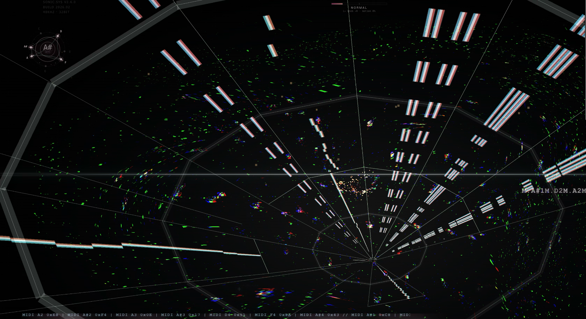
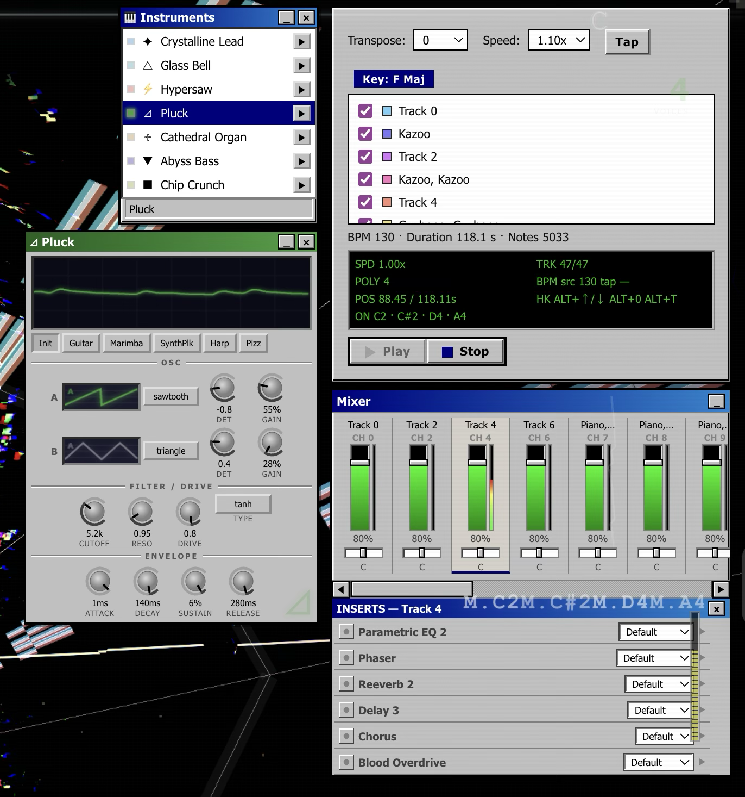
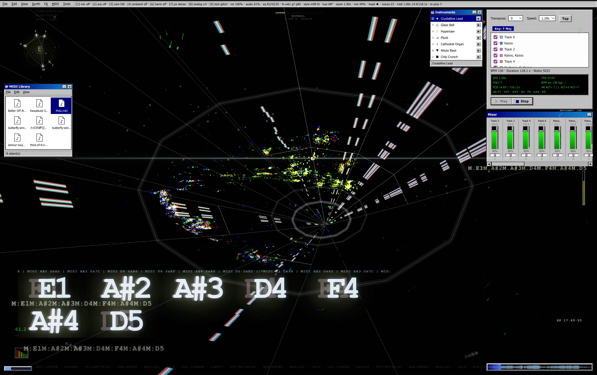
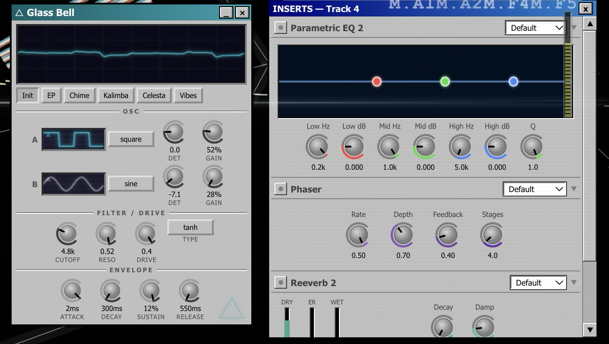

Sonic is a browser-based visual music playground that turns keyboard input into synchronized audio and real-time 3D graphics. Built entirely with client-side web technologies—Web Audio API, Three.js, and a DOM overlay HUD—the app wraps a deep synth and drum engine in a full Windows 95–styled interface. No bundlers: dependencies load from CDN across a single-page entry point, a ~10,900-line core module, MIDI player, WebSocket bridge, and theme CSS.
Polyphonic synthesizer with seven presets, a twelve-type drum machine, per-track mixing, and a six-effect chain. Each voice uses detuned oscillators, optional sub and air partials, dual filters, waveshaper distortion, and ADSR envelopes—from hypersaw pads and cathedral organ to 8-bit chiptune. A mastering chain (highpass, saturator, compressor, limiter) sits alongside a separate punchy drum bus. Six send effects (EQ, phaser, reverb, delay, chorus, distortion) apply per MIDI track. A 4096-bin FFT analyser drives all visual reactivity each frame.
Shader-driven visuals with no traditional scene lights. A custom GLSL background composites eleven procedural layers (nebulae, voronoi, moiré, prism rings, caustics, and more), all audio-reactive. The centerpiece is a GPGPU particle system—16,384 particles in GPUComputationRenderer textures—with velocity physics combining curl noise, gravity, orbital jets, and toroidal vortex fields. Each chromatic pitch class maps to a unique physics and SDF morphology recipe.
A single fullscreen pass applies 20+ effects at 75% resolution: chromatic aberration, bloom, CRT scanlines, kaleidoscope, ACES tone mapping, and cinematic grading. MIDI files parse via @tonejs/midi with lookahead scheduling, Krumhansl-Kessler key detection, and a Win95-styled per-track mixer stored in IndexedDB. A 3D piano roll renders upcoming notes on a rotating N-gon prism with instanced meshes and glow halos.
Socket.IO enables multi-device control: a desktop host shows a QR room code; mobile clients claim slots for instruments, mixer, effects, drums, or keyboard. Optional webcam head-tracking and gyroscope input drive camera and post FX. Frame budgeting throttles piano roll, constellation canvas, and DOM updates; instanced meshes and signature-cached overlays keep the loop real-time.


